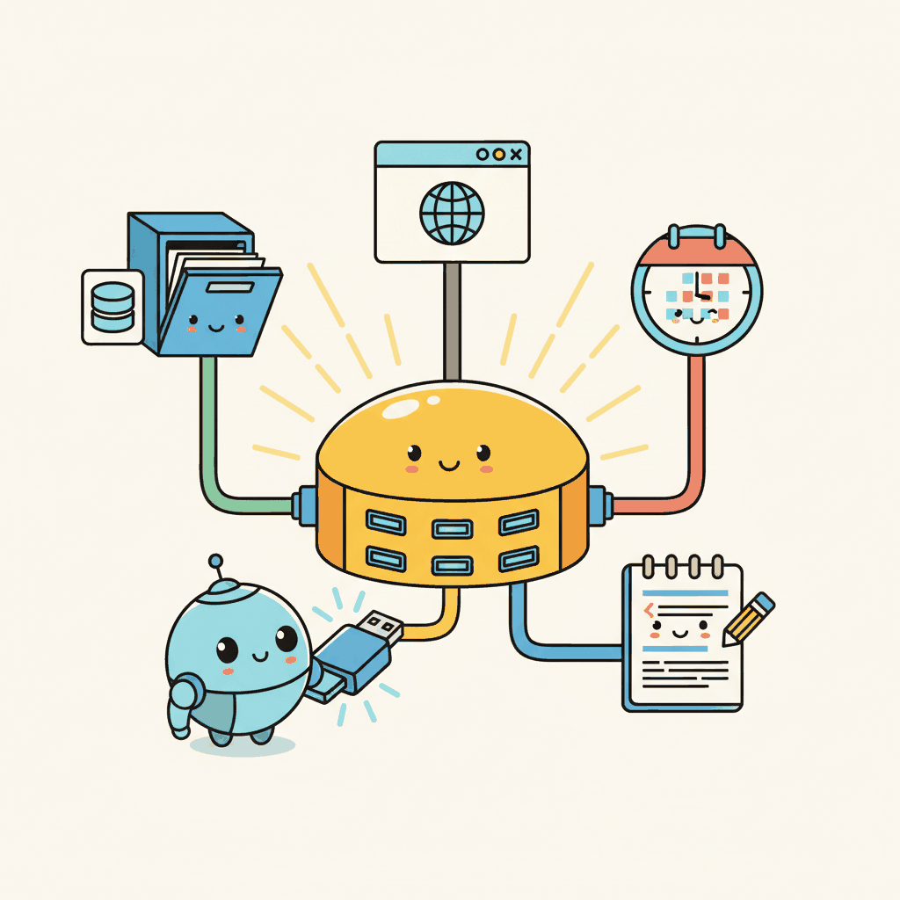

"Standards are wonderful. That is why every vendor invents their own."
Pip, Protocol-Weary AI Agent
MCP is USB for AI: a universal protocol that lets any agent connect to any data source or tool. Before MCP, every tool integration required custom code for each LLM provider and each external service. MCP standardizes this into a single client-server protocol with capability negotiation, structured message formats, and multiple transport layers. With over 6,400 community-built servers and adoption by Claude Desktop, Cursor, and many open-source frameworks, MCP has become the de facto standard for agent-to-tool connectivity. This section covers the protocol architecture, server development in Python and TypeScript, and practical patterns for building production MCP integrations.
Prerequisites
This section builds on agent foundations from Chapter 26 and LLM API basics from Chapter 13.

22.2.1 What Is MCP?
Anthropic Connectors are first-party managed integrations (Google Drive, Slack, GitHub, Confluence) that Claude can query directly without a custom MCP server, trading customization for operational simplicity. Claude Plugins are the curated marketplace tier on top of MCP: third-party developers publish capabilities into the Claude platform, similar to ChatGPT Plugins (now GPT Actions) or Google Agentspace Marketplace Extensions. The pedagogical point: MCP is the open protocol; Connectors and Plugins are the provider's curated, hosted distribution layer on top. Pick based on how much customization vs. operational burden you can absorb.
The Model Context Protocol (MCP) is an open standard created by Anthropic that defines how LLM applications connect to external data sources and tools. Think of it as USB for AI: a universal interface that lets any MCP-compatible application connect to any MCP server without custom integration code. Before MCP, every tool integration required bespoke code for each LLM provider and each data source. MCP standardizes this into a single protocol with well-defined message formats, capability negotiation, and transport layers.
The adoption has been rapid. As of early 2026, the MCP ecosystem includes over 6,400 community-built servers covering databases, APIs, file systems, development tools, and cloud services. The TypeScript and Python SDKs see over 97 million monthly downloads combined. Major AI applications including Claude Desktop, Cursor, Windsurf, and numerous open-source AI agent support MCP natively. This ecosystem effect means that building one MCP server makes your tool available to every MCP-compatible agent, rather than requiring separate integrations for each platform.
MCP follows a client-server architecture. The MCP host is the LLM application (Claude Desktop, your custom agent). The MCP client is a protocol handler within the host that manages connections. MCP servers expose tools, resources (data), and prompts through the protocol. A single host can connect to multiple servers simultaneously, giving the agent access to a rich set of capabilities through a unified interface.
MCP's power lies in its three primitives: Tools (executable functions the model can call), Resources (data the application can read), and Prompts (reusable prompt templates). Most developers start with Tools, but Resources are equally important for agents that need to read configuration files, database schemas, or documentation without making the model "call" a function. Resources let the host application pull context proactively rather than waiting for the model to request it.
MCP's design follows a principle from software engineering with deep roots in systems theory: the separation of interface from implementation, formalized as the "dependency inversion principle" by Robert C. Martin and, more broadly, as the concept of "loose coupling" in systems design. In economics, this principle is known as standardization: just as the shipping container (introduced by Malcolm McLean in 1956) revolutionized global trade by creating a standard interface between ships, trucks, and trains, MCP creates a standard interface between AI agents and tools. Before MCP, every agent framework implemented its own tool-calling protocol, creating an N x M integration problem (N agents times M tools). MCP reduces this to N + M, the same reduction that USB achieved for computer peripherals and that REST APIs achieved for web services. The historical pattern is clear: whenever an ecosystem reaches a critical mass of interacting components, a standardized protocol emerges to tame the combinatorial explosion of pairwise integrations.
MCP Architecture
Input: MCP host (LLM application), MCP server (tool provider)
Output: established session with discovered capabilities
1. Host opens transport (stdio pipe or HTTP/SSE connection)
2. Host sends initialize request:
{ protocolVersion, clientInfo, capabilities }
3. Server responds with initialize result:
{ protocolVersion, serverInfo, capabilities }
// capabilities declare: tools, resources, prompts
4. Host sends initialized notification
// handshake complete, session is now active
5. Host calls tools/list to discover available tools
6. Server returns tool schemas (name, description, inputSchema)
7. for each user interaction:
a. LLM selects a tool and generates arguments
b. Host sends tools/call { name, arguments }
c. Server executes tool, returns result content
d. Host feeds result back to LLM for next step
# Building a simple MCP server with the Python SDK
from mcp.server import Server
from mcp.types import Tool, TextContent
import mcp.server.stdio
server = Server("weather-server")
@server.list_tools()
async def list_tools():
return [
Tool(
name="get_weather",
description="Get current weather for a city. Returns temperature, "
"conditions, humidity, and wind speed.",
inputSchema={
"type": "object",
"properties": {
"city": {
"type": "string",
"description": "City name, e.g. 'London' or 'Tokyo'",
},
},
"required": ["city"],
},
)
]
@server.call_tool()
async def call_tool(name: str, arguments: dict):
if name == "get_weather":
city = arguments["city"]
# In production, call a real weather API here
weather = fetch_weather(city)
return [TextContent(
type="text",
text=f"Weather in {city}: {weather['temp']}C, "
f"{weather['conditions']}, "
f"Humidity: {weather['humidity']}%"
)]
raise ValueError(f"Unknown tool: {name}")
async def main():
async with mcp.server.stdio.stdio_server() as (read, write):
await server.run(read, write, server.create_initialization_options())
if __name__ == "__main__":
import asyncio
asyncio.run(main())If you only need tool calling without the full MCP protocol, LangChain tools (pip install langchain-core) let you define and bind tools in 4 lines:
from langchain_core.tools import tool
@tool
def get_weather(city: str) -> str:
"""Get current weather for a city."""
return f"Weather in {city}: 18C, partly cloudy, humidity 65%"
# Bind the tool to any chat model that supports function calling
llm_with_tools = chat_model.bind_tools([get_weather])22.2.2 Building MCP Servers
An MCP server exposes capabilities through the protocol. The simplest servers wrap a single API or database. More sophisticated servers expose multiple tools, resources, and prompts. The key design decisions are: what granularity of tools to expose (one broad tool vs. many specific tools), what data to surface as resources (schema information, documentation, recent results), and how to handle authentication and rate limiting.
The MCP SDK handles protocol negotiation, message serialization, and transport (stdio for local servers, SSE/HTTP for remote servers). Your job is to implement the tool logic and define clear schemas. A well-designed MCP server follows the same principles as a good REST API: clear naming, comprehensive descriptions, sensible defaults, and informative error messages. The model reads your tool descriptions to decide when and how to call them, so invest time in writing descriptions that are precise and include usage examples.
For database access, consider exposing both query tools (let the model write SQL) and structured access tools (predefined queries with parameters). The query approach is more flexible but requires careful sandboxing to prevent destructive operations. The structured approach is safer but limits what the agent can do. Many production deployments use a hybrid: structured tools for common operations, a read-only SQL tool for ad-hoc queries, and no write access through MCP at all.
Who: A developer experience team at a 200-person software company building internal AI tooling.
Situation: The team wanted a code review agent that could search for related issues, read relevant files, and post review comments on pull requests. They had already integrated Slack and Jira through custom connectors and faced the prospect of building yet another bespoke GitHub integration.
Problem: Each new tool integration required a custom adapter, a dedicated maintenance owner, and agent-specific prompt tuning. The team was spending 30% of their sprint capacity on integration maintenance rather than agent capabilities.
Decision: They built a GitHub MCP server exposing five tools (search_issues, get_issue_details, create_comment, list_pull_requests, get_file_contents) and three resources (README, CONTRIBUTING.md, release notes). Critically, the server did not expose merge_pull_request or delete_branch because these high-consequence actions required human approval outside the agent loop.
Result: The MCP server worked immediately with Claude Code, Cursor, and their internal agent, eliminating three separate integration codebases. Integration maintenance dropped from 30% to 8% of sprint capacity.
Lesson: Standardized tool protocols pay for themselves not on the first integration but on the second and third, when every new agent gets access for free.
MCP solves the N x M integration problem. Without a standard protocol, connecting N agents to M tools requires N x M custom integrations. MCP reduces this to N + M: each agent implements the MCP client protocol once, and each tool provider implements the MCP server protocol once. This is the same network effect that made USB, HTTP, and SQL so transformative. For teams building agent systems, adopting MCP means that every new tool server you build (or find in the ecosystem) is instantly available to every MCP-compatible agent, and every new agent you build instantly has access to thousands of existing tool servers. The protocol makes tool use a solved infrastructure problem rather than a per-project integration burden.
22.2.3 The MCP Ecosystem
The MCP ecosystem has grown rapidly through community contributions. Major categories of available servers include: database access (PostgreSQL, MySQL, SQLite, MongoDB), cloud services (AWS, GCP, Azure), development tools (GitHub, GitLab, Jira, Linear), communication (Slack, Discord, email), file systems (local, S3, Google Drive), and specialized domains (financial data, weather, geolocation). The MCP registry at github.com/modelcontextprotocol/servers catalogs officially maintained servers, while thousands more community servers are available through npm and PyPI.
Composing multiple MCP servers is where the protocol's value becomes most apparent. A development agent can simultaneously connect to GitHub (for code and issues), Jira (for project management), Slack (for team communication), and a database server (for application data). Each server is maintained independently, and the agent seamlessly uses tools from all of them within a single conversation. This composability would require significant custom integration work without a standardized protocol.
Lab: Build an MCP Server and Client
In this lab, you will build a custom MCP server that wraps a SQLite database, connect to it from a Python MCP client, and use it to power a simple data analysis agent.
Tasks:
- Create an MCP server with tools for listing tables, describing schemas, and running read-only SQL queries
- Add a resource that exposes the database schema as context
- Build a client that connects to the server and provides the tools to an LLM
- Test the agent on natural language data questions that require multi-step SQL queries
Objective
Apply the concepts from this section by building a working implementation related to this lab exercise.
What You'll Practice
- Implementing core algorithms covered in this section
- Configuring parameters and evaluating results
- Comparing different approaches and interpreting trade-offs
Setup
The following cell installs the required packages and configures the environment for this lab.
A free Colab GPU (T4) is sufficient for this lab.
Steps
Step 1: Setup and data preparation
Load the required libraries and prepare your data for this lab exercise.
# TODO: Implement setup code hereExpected Output
- A working implementation demonstrating this lab exercise
- Console output showing key metrics and results
Stretch Goals
- Experiment with different hyperparameters and compare outcomes
- Extend the implementation to handle more complex scenarios
- Benchmark performance and create visualizations of the results
Complete Solution
# Complete solution for this lab exercise
# TODO: Full implementation hereExercises
Explain the client-server architecture of MCP (Model Context Protocol). What are the three core primitives that an MCP server exposes, and how do they differ?
Answer Sketch
An MCP server exposes capabilities to MCP clients (which run inside LLM applications). The three primitives are: Tools (callable functions the model can invoke), Resources (data the model can read, like files or database records), and Prompts (reusable prompt templates). Tools are actions; resources are data; prompts are templates.
Write a minimal MCP server in Python using the mcp library that exposes a single tool called word_count. The tool takes a text string and returns the number of words.
Answer Sketch
Use from mcp.server import Server and @server.tool() decorator. The function takes a text: str parameter and returns len(text.split()). Run with mcp.server.stdio.run(server). Test by connecting a client and calling the tool.
Compare MCP with direct function calling (as in OpenAI/Anthropic APIs). What problem does MCP solve that direct function calling does not? When would you choose one over the other?
Answer Sketch
Direct function calling is provider-specific and tightly coupled to your application code. MCP provides a standardized, provider-agnostic protocol that lets any MCP client connect to any MCP server. Choose MCP when you want tool reusability across applications, team-shared tool registries, or when third parties provide tool integrations. Choose direct function calling for simple, single-application setups.
An MCP server exposes a tool that executes SQL queries against a production database. Identify three security risks and propose mitigations for each.
Answer Sketch
(1) SQL injection via model-generated queries: use parameterized queries and a query allowlist. (2) Data exfiltration through overly broad queries: enforce row limits and column restrictions. (3) Unauthorized access: require authentication tokens and implement per-user permission scoping. Also consider read-only database connections for query tools.
Explain how MCP enables tool discovery and composition. How does an LLM application learn what tools are available on a connected MCP server?
Answer Sketch
When an MCP client connects to a server, it calls the list_tools method to discover available tools, their schemas, and descriptions. The client then includes these tool definitions in the LLM's prompt. This enables dynamic tool discovery: the application does not need to hardcode tool definitions. Multiple MCP servers can be connected simultaneously, and the client aggregates all available tools.
Have tools return structured data (JSON with consistent keys) rather than free-text descriptions. This makes it easier for the model to parse results and reduces the chance of misinterpreting tool output on subsequent reasoning steps.
- MCP standardizes tool discovery and connection, enabling a plug-and-play ecosystem for AI applications.
- MCP uses a client-server architecture with JSON-RPC transport; servers declare capabilities at connection time.
- MCP servers can expose tools (callable functions), resources (readable data), and prompts (reusable templates).
Show Answer
MCP standardizes how AI applications discover and connect to external data sources and tools. While function calling defines how a model invokes a single tool, MCP provides a protocol for tool discovery, capability negotiation, and a universal client-server interface, enabling plug-and-play tool ecosystems.
Show Answer
An MCP client (inside the AI application) connects to one or more MCP servers (each wrapping a data source or tool). Communication uses a JSON-RPC transport (typically stdio for local servers or SSE/HTTP for remote ones). Servers declare their capabilities (tools, resources, prompts) at connection time.
Further Reading
What Comes Next
In the next section, Agent-to-Agent Protocol (A2A), we explore how agents communicate with each other using standardized protocols for task delegation and result exchange.